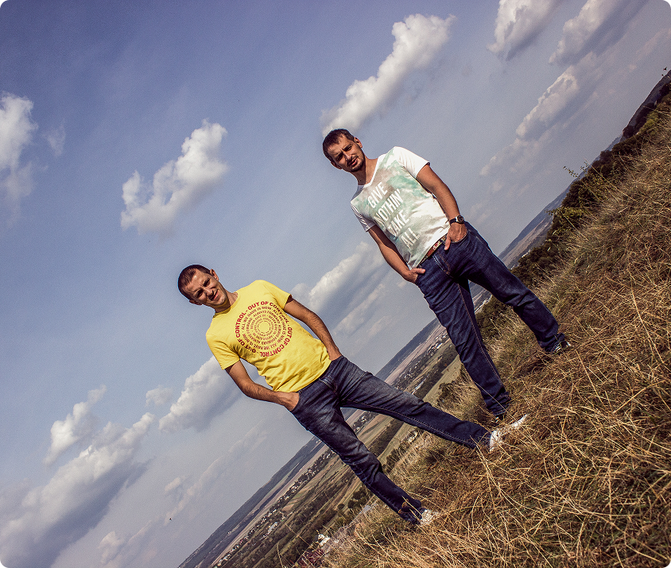

Behind the music
How A.L.Y.S. approaches production and collaboration
For A.L.Y.S., production is part of the song's identity. The Ukrainian project of Andy Suncraft and DJ Base-T builds electronic tracks around melody, atmosphere and a clear emotional direction.

From the first idea to the finished arrangement
The project works across EDM, progressive house, electro house and trance. Each style calls for a different balance of rhythm, harmony and space. A.L.Y.S. pays close attention to how a track develops: the opening sets its mood, the arrangement creates movement, and the release of energy needs to feel earned.
Composition, sound selection, vocal processing and mixing are all part of that process. The duo's stated aim is a clean, warm and professional sound that still carries the original feeling of the musical idea. Extended club mixes and radio edits can ask for different structures, yet both need a coherent song at their center.
Working with voices and songwriters
A.L.Y.S. has worked with Katari, Rebecca Louise Burch, Hidden Tigress and Louise Browne. Vocal collaborators bring their own character to a production and help turn an instrumental idea into a story. The music then has to leave room for that voice while maintaining its melodic drive.
This is why the duo treats vocals as a central element rather than an added layer. The interplay between lyrics, melodic hooks and electronic arrangement gives each collaboration its own character.
A place in melodic electronic music
The A.L.Y.S. story also includes connections with electronic music labels and platforms named on the project's About page, including Abora / Narratology, Synchronized, Alter Ego, ZYX Music, Ablazing, Nahawand, Redux, Emergent Music and Sub.Mission. These connections reflect the project's interest in the wider progressive and melodic dance music scene.
Explore the A.L.Y.S. sound, browse the music selection, or see the services offered by the project.